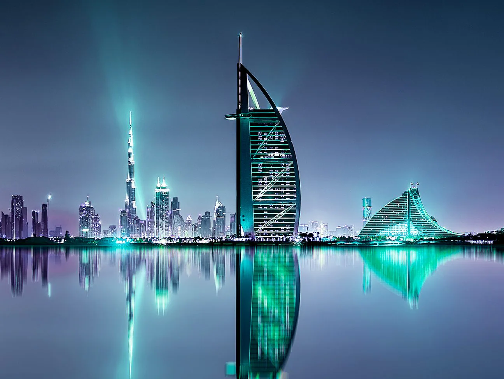

– Atlantis, The Palm
Entre os grandes hotéis de Dubai, um dos que mais se destacam é o resort Atlantis The Palm, um complexo de lazer e entretenimento localizado na ilha artificial The Palm Jumeirah, a 35 km do centro da cidade.
– One&Only Royal Mirage Resort Dubai at Jumeirah Beach
Localizado de frente para a baía de Palm Island e com vista do Golfo Pérsico, este resort de luxo dispõe de 1 km de área de praia e 26 hectares de jardins exuberantes.
O One&Only Royal Mirage fica a 10 minutos de carro do parque aquático Aquaventure e do shopping Mall of the Emirates e a 20 minutos de carro do arranha-céu Burj Khalifa e do shopping Dubai Mall.
As estadias de 3 diárias ou mais no One&Only Royal Mirage incluem 1 acesso gratuito por pessoa e por estadia ao parque aquático Aquaventure no Atlantis The Palm, situado nas proximidades.
– Rove Downtown
om uma piscina ao ar livre e um deck, o Rove Downtown Dubai tem uma localização conveniente bem no centro de Dubai e ao lado do Burj Khalifa e do The Dubai Mall.
Este hotel oferece salas de reuniões 24 horas e quartos espaçosos de 26 m², dos quais 30% são conjugados. Outras comodidades incluem Wi-Fi grátis, check-out tardio às 14h, academia 24 horas, lavanderia self-service e loja de conveniência.
O hotel fica a 20 minutos de carro do Aeroporto Internacional de Dubai e a apenas 4 minutos de carro da estação de metrô Burj Khalifa.
– Jumeirah Al Qasr
Situado em 2 km de praia privativa, o Jumeirah Al Qasr é uma propriedade 5 estrelas com área paisagística extensa, canais, quartos incluindo varanda privativa com móveis e um restaurante que serve frutos do mar, suspenso sobre o Golfo Pérsico.
Os quartos espaçosos do Jumeirah Al Qasr contam com vista do Golfo Pérsico ou das áreas do hotel. Todos os quartos dispõem de closet privativo, box amplo incluindo chuveiro com efeito de chuva e decoração com móveis de época.
Você pode relaxar na praia privativa do Jumeirah Al Qasr, com frutas da estação e toalhas disponíveis gratuitamente. O Spa Talise oferece salas de tratamento sobre a água. A propriedade conta ainda com um amplo complexo de piscinas com áreas para crianças e um lounge no saguão revestido em mármore, com palmeiras.
–Burj Khalifa
Burj Khalifa Bin Zayid, também conhecido como Burj Dubai, é o maior arranha-céu construído por um ser humano. Ele tem 828 metros de altura (sendo 844 metros acima do nível do mar), distribuídos em 160 andares, onde alguns estão abertos para a visitação de turistas.